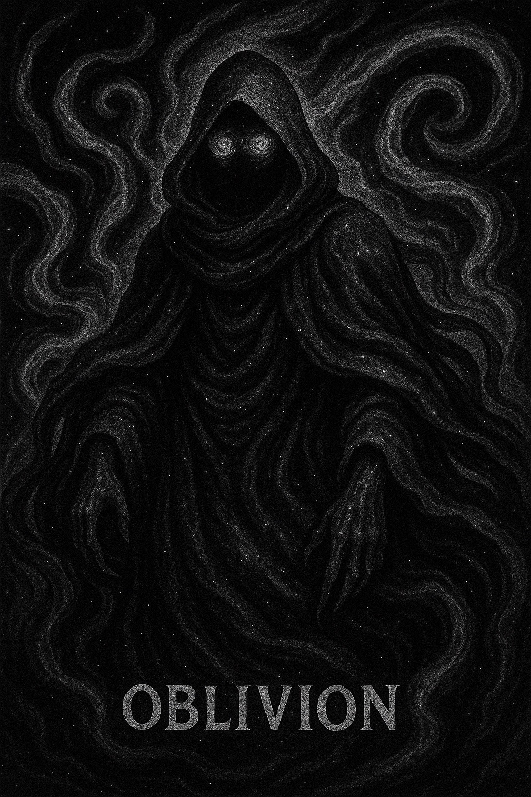

Oblivion

Alias: Primordial of Destruction
Age / Race / Role: Primordial Eternity / Primordial / Avatar of Erasure, Ender of Realms
Appearance: A vast, shifting form of shadowflame and collapsing starlight. Its presence distorts reality, with a face that vanishes from memory.
Affinities: Destruction, Void, Forbidden Dark
Threat Tier: Divine-Class
Celestial Attributes
• Power: 10
• Speed: 9
• Technique: 9
• Intelligence: 10
• Defense: 10
• Aura Control: 10
Signature Abilities
• Entropic Collapse
• Oblivion Wake
• Core Unraveling
• Absolute Ruin
• Final Dusk Surge
Personality
Immeasurable and inexorable. It does not speak; it devours. The multiverse trembles at its mere awareness.
Divine Domain: The Abyss